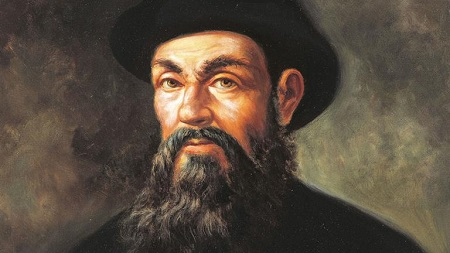
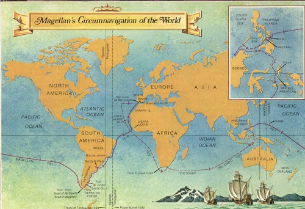

Portugalski moreplovac i istraživaè, vjerojatno najveæi moreplovac u povijesti, Fernando Magellan, rodio se u plemiækoj obitelji i mladost je proveo na kraljevskom dvoru. Poznati moreplovac u svoju prvu prekomorsku avanturu kreæe u svojoj 25 godini života, toènije 25. ožujka 1505.g. kada je portugalska ratna flota od 22 broda krenula na putovanje prema Indiji.
Prvi dio putovanja oko Afrike i prisiljavanje tamošnjih vladara je prošlo bez otpora (najveæa bitka u Tanzaniji). Zajedno s prijateljem pomorskim astronomom Faleirom 20. listopada 1517. napušta Portugal i odlazi u Španjolsku kod kralja Karla V. U Portugal se više nikada neæe vratiti.
Dolaskom u Španjolsku na sastanku s kraljem predlaže da se u Indiju stigne putujuæi na zapad. Tijekom izlaganja svojeg prijedloga sluèajno ili namjerno laže obeæavajuæi da bogati otoci pred Indijom spadaju u španjolsku interesnu zonu po onome kako je papa podijelio svijet. Ta laž rezultirala je ispunjenjem svih njegovih želja za prvu plovidbu oko svijeta.
Stvarni problem je bilo samo putovanje pošto je u proraèunima napravio pogrešku, jer po njegovom mišljenju prolaz u Tihi ocean su veæ otkrili Portugalci i on se nalazi kod 40 paralele. Ta greška æe mu tijekom putovanja stvoriti velike probleme. 20. rujna 1519.g. Magellanova ekspedicija napušta Španjolsku luku San Lucar. Isplovio je s pet starih i nezgrapnih brodova, trbušastih trošnih jedrenjaka: San Antonio, Trinidad (admiralski), Concepcion, Victoria, Santiago, te 256 èlanova posade.
Ruta ide prema Kanarskim otocima, prelazi Atlantski ocean, te 13. Prosinca 1519.g dolaze u Brazil u zaljev grada Ria gdje se snabdijevaju trgujuæi s domorodcima. Nakon toga uz obalu Amerike kreæu prema 40 paraleli , gdje se navodno nalazi prolaz za Tihi ocean. 10 sijeènja 1520. g. dolaze do cilja,ali to bijaše ušæe rijeke Rio de la Plata. Razoèaran ovim saznanjem Magellani njegova posada tu ostaju do 2. veljaèe 1520. te nastavljaju svoj put dalje prema jugu. Na tom putovanju u južnoj Argentini osnivaju grad San Giuliana, u travnju 1520. g. pet dana nakon toga posada njegova tri broda se pobunila, ali Magellan pobunu uspijeva ugušiti, a voðe ostavlja na nepoznatoj obali prepuštene sebi samima. Nakon toga šalje u istraživanje brod Santiago, no brod doživljava brodolom. San Giulianu s ostatkom brodova i posade napušta 24. kolovoza 1520. g., a dva mjeseca poslije nalazi prolaz u Tihi ocean koji od tada nosi njegovo ime.

U poèetku ne zna da je uspio u svom pothvatu, pa je podijelio brodove u dvije grupe za daljnja istraživanja. Brod San Antonio je dezertirao i vratio se u Španjolsku. Ostatak flote nastavlja dalje (tribroda) i 28. studenog 1520. ulazi u ocean kojemu æe dati ime TIHIOCEAN = El Mar Pacifico, Miroljubivo, Mirno more, beskrajno more, bez valova i vjetrova, mirno kao ulje. Taj put je bio velika nepoznanica. Ploveæi kroz tjesnac „strave i užasa“ na južnim obalama Magellan zamjeæuje nebrojene vatre (palili su ih prozebli Indijanci koji su preživljavali polarne studeni) i u svoju kartu i brodski dnevnik zapisuje: To je Tierra del Fuegeo, Zemlja vatre =Ognjena zemlja ( južni dio Južne Amerike). Mi odavno znamo da to nije zemlja vatre, veæ je to hladan otok, polarnih vjetrova i ledenih kiša. S druge strane pogrešan je i naziv Tihi ocean jer ga svi pomorci poznaju kao burno more s najveæim valovima i razornim tajfunima.6. 0žujka 1521. g. ugledali su kopno, te taj otok Magellan imenuje kao Otok lopova tj. Marijansko otoèje (jer su zbog izmuèene posade koja nijemogla reagirati, domaæi stanovnici pokrali s brodova sve što su mogli ponijeti). Sljedeæi dan, oporavljena posada napada stanovništvo, opskrbljuje se hranom, vrši pljaèke i paljenje domova i nastavlja put. Nedugo nakon toga dolaze do malenog otoka na podruèju Filipina. Istražujuæi otok po otok stižu na otok Cebu koji se nalazi u središtu Filipina.
Megellana doèekuje raða (vladar) Humabon koji s Magellanom sklapa prijateljstvo i s muslimanske vjere prelazi na kršæanstvo. To ubrzo stvara pobunu meðu lokalnim stanovništvom na èelu s lokalnim poglavicom imena Lapu.